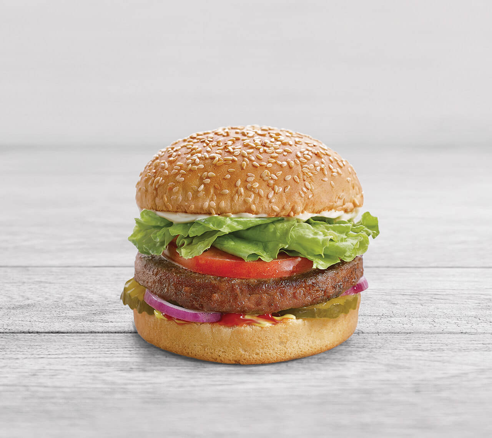

Ingredients
- 1 cup Greek yogurt
- 2 teaspoons minced garlic
- 1 teaspoon lemon juice
- 1 teaspoon dried dill
- ½ teaspoon salt
- 1 tablespoon Greek seasoning (such as Cavender's®)
- 4 Beyond Meat® burger patties
- 4 hamburger buns
- 8 leaves lettuce
- 1 small red onion, sliced
- 1 small tomato, sliced
- 12 pitted Kalamata olives, halved
Directions
- Grate cucumber and place in a colander to drain for 10 minutes. Press out any remaining liquid with paper towels.
- Stir together cucumber, yogurt, garlic, lemon juice, dill, and salt in a small bowl; set aside.
- Preheat an outdoor grill for medium-high heat and lightly oil the grate.
- Sprinkle Greek seasoning on both sides of burger patties.
- Place patties on the preheated grill and cook for 4 minutes. Flip and grill for 4 more minutes. Place burgers on buns and top with lettuce, onion, tomato, olives, and reserved cucumber sauce.
Return to top
Main page